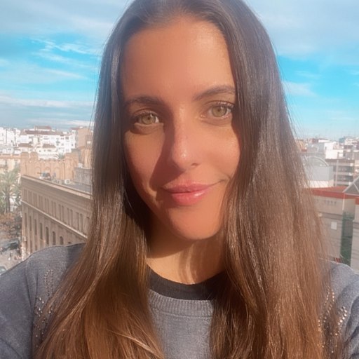
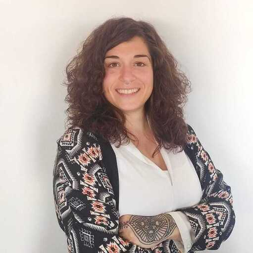
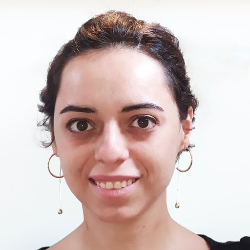
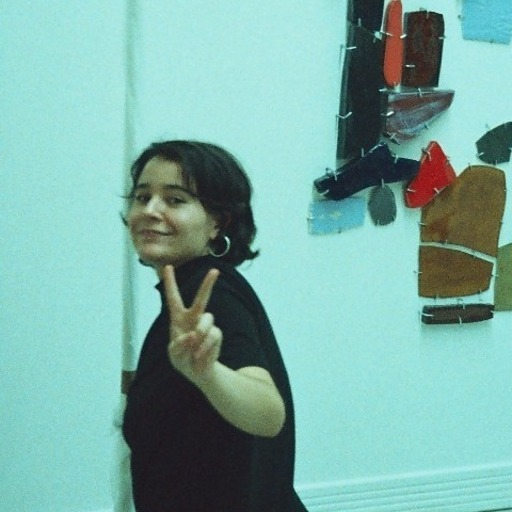

Este equipo está formado por cinco mujeres con backgrounds muy distintos, desde ingeniería hasta filosofía,
cuyos caminos les han llevado a encontrarse en este punto de sus vidas en el que han decidido adentrarse en
un nuevo sector y aprender a desenvolverse en el mundo del desarrollo web.
Les espera un largo aprendizaje y un camino lleno de sorpresas pero han demostrado tener lo que hay que
tener
para afrontar cualquier circunstancia que la vida les ponga por delante.
Fortalezas
Nos gustaría destacar las ganas e ilusión que hemos puesto en este primer proyecto que aun no teniendo unos
grandes
conocimientos, hemos conseguido crear esta pagina web y utilizar GIT, por lo que nos hace pensar con optimismo,
que en
un corto periodo de tiempo podremos completar proyectos aun mas complejos.
Debilidades
La creación de este primer proyecto a supuesto un gran desafío para nosotras, teniéndonos que acostumbrar a
un modelo de trabajo al que no estábamos acostumbradas en nuestra mayoría, aprendiendo a escucharnos y ayudándonos
siempre las unas a las otras. Obviamente nuestra mayor debilidad es la falta de conocimientos previos y el no
saber
cuánto nos queda por aprender y esa incertidumbre nos puede generar a veces ansiedad y dudas.
QUIÉNES SOMOS

Francesca Bentin
Mi nombre es Francesca, llevo varios años trabajando en el area comercial, mayormente en empresas de consumo masivo.Después de muchos años de intentar darle un giro a mi carrera y al ir formándome por mi cuenta, descubrí que el desarrollo web me apasiona! Es por ello que elegí adalab para emprender este camino. Estoy muy emocionada de formar parte de este sector, con muchas ganas de aprender y comprometida a dar siempre el 100%

Nuria Castaño
Estudié ingeniería técnica en diseño industrial, donde descubrí por primera vez la programación en una de mis asignaturas. Después de trabajar como diseñadora y adentrarme en el mundo del marketing digital, volví a encontrarme con el desarrollo web y como persona curiosa y siempre con ganas de aprender y evolucionar, no dude saltar este mundo el cual, me apasiona. Me alegra haber entrado en este sector de la mano de Adalab en donde la formación está siendo muy completa.!

Cristina Faixedas
Mi nombre es Cristina, llevo 9 años trabajando de Administrativa, en el sector de Atención al Cliente y Logística. Gracias a ello, entro en el mundo de la programación sabiéndome desenvolver en trabajos de oficina y con experiencia en coordinación entre distintos departamentos y empresas para conseguir llevar a cabo un objetivo común con la mayor eficiencia, facilidad y rapidez posibles. He descubierto que el desarrollo web me apasiona y he decidido dedicar mis esfuerzos a perseguir ese cambio de vida con mucha ilusión y muchas ganas de seguir aprendiendo

Manuela Inclán
Mi primer contacto con la programación fue haciendo instalaciones artísticas interactivas, desde entonces siempre he querido aprender más y en ello estoy gracias a Adalab
Virginia Lucero
Después de estudiar varias cosas relacionadas con la sanidad y habiendo trabajado de ello, me mudé a Londres y formé una familia. Siempre con la idea de que el saber no ocupa lugar, y buscando opciones laborales que pudiese compatibilizar con mis hijos, encontré Adalab. Un reto más :músculo: